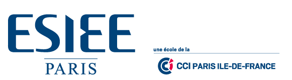

L'équipeEQUIPE

Je viens de Trieux, un village de l’est de la France entre Metz et Nancy en Lorraine. Je suis un grand fan de jeux vidéos et d’animés japonais.
Je suis un grand fan de sport en particulier de basketball, que je pratique dans un club dans l’Oise, je suis également intéressé par tout ce qui touche à la musique.
Je suis très intéressé par tout ce qui touche à la musique, je suis d’ailleurs bassiste dans un groupe de métal appelé Banana Diaper.
J’ai 19 ans, je suis guitariste soliste de Banana Diaper et je suis passioné par l'informatique. Je suis aussi concerné par les oeuvres caritatives.
A Propospropos
Ce site web est un des livrables que l’équipe a réalisé dans le cadre du cours de Cartographie de Controverses, qui a lieu en première année à ESIEE Paris. Les auteurs avaient pour mission de trouver un sujet intéressant et de le traiter selon un protocole particulier. Chaque équipe a été suivie par un professeur lors des séances de travaux pratiques et par un autre professeur pour la partie gestion de projet. Les résultats ont été médiatisés par une affiche, un Site Web et ce livret.
Bonne lecture !
Lionel Villard (responsable du cours) et l’équipe des professeurs
